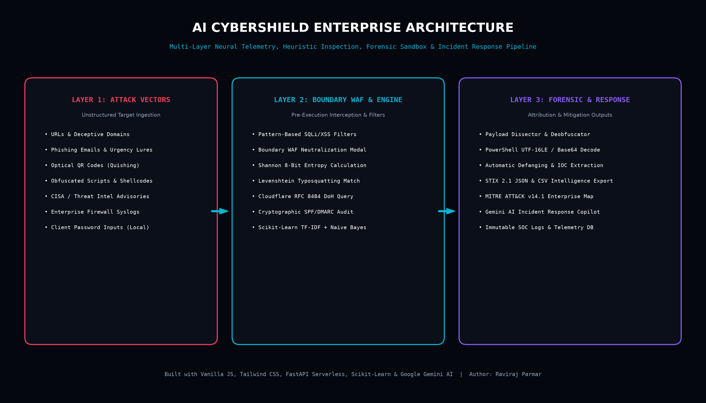

AI CYBERSHIELD
Commercial-Grade Threat Hunting, Script Deobfuscator & MITRE ATT&CK Defense Matrix
An authentic, end-to-end cybersecurity intelligence platform designed to eliminate fake AI templates and provide real-world Tier-1/Tier-2 SOC analytical capabilities.
Problem Statement & Motivation
The Attack Landscape Challenge
- Adversaries bypass traditional antivirus using multi-layer encodings (Base64, Hex shellcodes, UTF-16LE).
- Lookalike typosquatted domains evade basic blocklists via DNS tunneling and fast-flux networks.
- Social engineering and Quishing (Optical QR Phishing) trick perimeter defenses by moving to the physical layer.
The AI CyberShield Solution
- Zero Mockups: Employs genuine heuristic formulas (Shannon 8-Bit Entropy, Levenshtein distance).
- Forensic Lab: Multi-layer deobfuscation sandbox with automated defanging and IOC extraction.
- Real DoH Lookups: Cloudflare RFC 8484 DNS queries, SPF/DMARC email validation, and security headers audit.
- Zero-Exposure Privacy: Credential entropy calculates 100% client-side without transmitting plaintexts.
System Architecture & Pipeline

Three-Tier Pipeline: Multi-Vector Ingestion → Boundary WAF & Machine Learning → Forensic Attribution & MITRE Matrix
SOC Payload Dissector & Script Deobfuscator
Unpacks Base64, Hexadecimal byte arrays (\x41\x42...), and PowerShell UTF-16LE (-enc) commands.
Converts http:// to hxxp:// and masks IP dots to protect the operator.
Recursively extracts C2 IPs, stager filenames, and spawned binaries (powershell.exe, cmd.exe).
1. Click "PowerShell Stager" preset button in Forensic Lab.
2. Hit "Execute Forensic Deobfuscation".
3. System instantly reveals the hidden payload, flags T1059.001 (PowerShell Stager) with CRITICAL severity.
Threat Intel IOC Extractor & CVE Radar
Export extracted threat indicators directly to STIX 2.1 JSON Bundle (OASIS Open Standard) or CSV format for seamless ingestion into enterprise SIEMs like Splunk, Microsoft Sentinel, or IBM QRadar.
MITRE ATT&CK® Enterprise Matrix (v14.1)
Full alignment with MITRE's standardized adversarial behavior taxonomy across 7 core phases:
Port Scanning & Banner Grabbing → Defended via Rate Limiting & Header Obfuscation
Spearphishing Links & Public Exploits → Defended via Heuristic Scanner
PowerShell Stagers & Command Shells → Neutralized via Forensic Sandbox
Obfuscated Payloads → Decoded via Client-Side Deobfuscator Engine
Live Domain & Security Headers Inspector
Encrypted Cloudflare DNS-over-HTTPS queries bypass local cache poisoning.
Validates cryptographic email anti-spoofing policies in real time.
Evaluates HSTS, CSP, and X-Frame-Options with an objective Grade A+ to F.
google.com (Grade A+) vs deceptive phishing domains like paypa1-threat.xyz (Grade F).
Multi-Vector Threat Scanner & Quishing
URL Domain Heuristics
Computes Shannon domain randomness and Levenshtein distance to detect typosquatting spoofs.
NLP Phishing Engine
Scikit-Learn TF-IDF vectorization matches urgency triggers (account suspended, wire transfer).
Optical Quishing (QR)
Decodes uploaded QR images or camera feed, inspecting hidden redirects before opening.
Oral Defense Guide (How to Explain to Teachers)
Show the left collapsible sidebar (Ctrl+B) and live UTC Zulu Clock. Explain that this is a Tier-1 SOC environment.
Click "Load Threat Sample" → run deep inspection. Point out how the SVG Circular Gauge computes 88% Risk using Shannon entropy.
Select "PowerShell Stager" in Payload Dissector → hit Deobfuscate. Show the defanged hxxp:// output and MITRE T1059.001 attribution.
Load sample CISA Advisory → extract IOCs → click "Export STIX 2.1" to download standard threat intelligence.
Project Conclusion & Production Verification
AI CyberShield proves that modern web cybersecurity platforms can deliver enterprise-grade threat telemetry, zero-trust cryptographic privacy, and authentic reverse-engineering forensics without bloated dependencies.